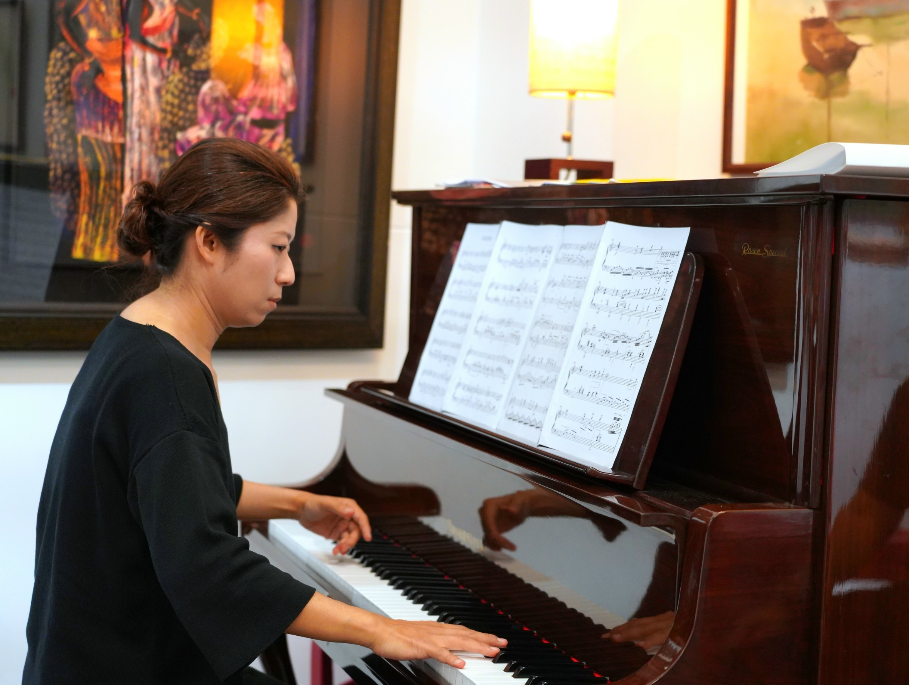
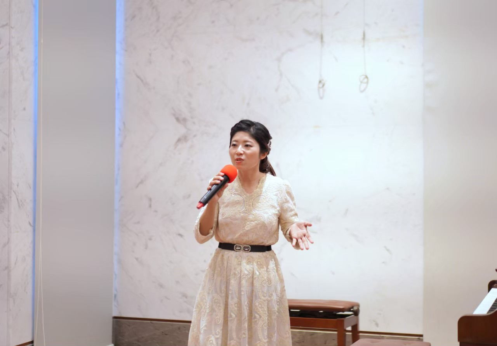
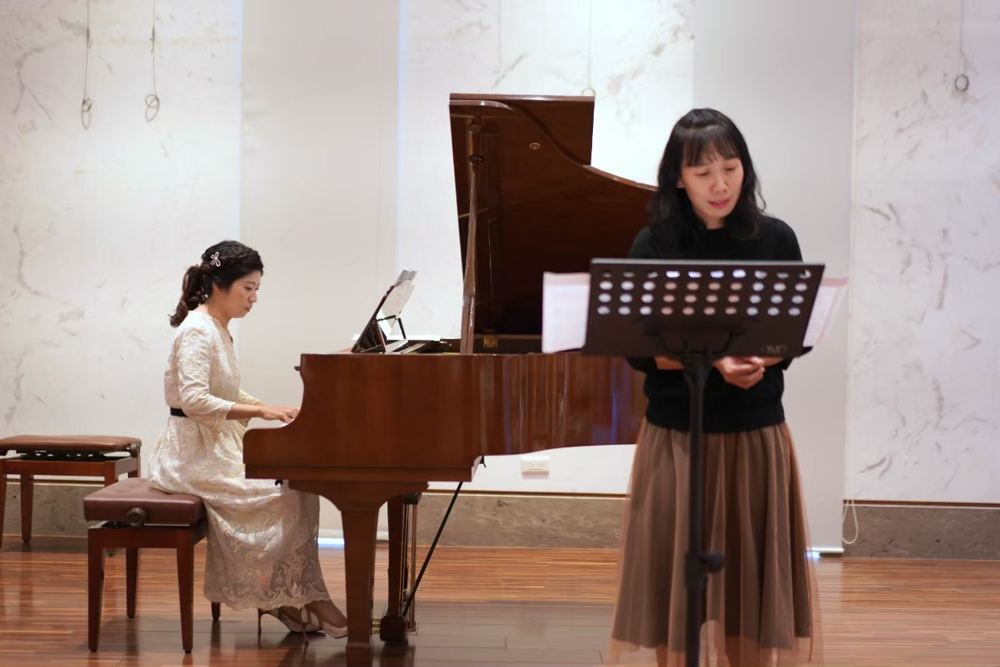

PERFORMANCES
學習歷程・精選演出
求學與職涯期間累積四十六場正式演出紀錄，以下為精選代表作，完整清單可展開查看。
2002年5月29日
台南科技大學鋼琴組協奏曲比賽優勝
與台南科技大學管弦樂團協奏，於「乃建堂」演出貝多芬第一號鋼琴協奏曲

2005年5月13日
The Art of Fingers 陳佩君鋼琴獨奏會
台南女子技術學院學生活動中心五樓西樂廳

2007年6-8月
2007年陳佩君鋼琴獨奏會（南科大／南藝大／台南三場）
台南科技大學、國立台南藝術大學、國立台南成功大學鳳凰樹劇場

2007年8月26日
「朋友之間」雙長笛慈善演奏會
台北市中山堂中正廳，鋼琴：陳佩君

2004年4-5月
台南女子技術學院四十週年校慶巡迴演出「古典之美」
台北中山堂、高雄中正文化中心、台南市立藝術中心、新竹建華國中，管風琴、鋼琴：陳佩君
2010年11月2日
歌劇萬花筒－歌劇選粹之夜
高雄市立文化中心至德堂，高雄市風雅頌藝術文化基金會／創世歌劇團
| 活動名稱 | 主辦單位／合作對象 | 展演地點 | 日期 |
|---|---|---|---|
| 二胡演奏家蔡鎮宇獨奏會 | 琬莎古典音樂沙龍 | 台南琬莎古典音樂沙龍 | 2010/12/26（日）2:30PM |
| 歌劇萬花筒－歌劇選粹之夜 | 高雄市風雅頌藝術文化基金會／創世歌劇團 | 高雄市立文化中心至德堂 | 2010/11/2（二）7:30PM |
| 許淇鈞聲樂獨唱會 | 許淇鈞／陳佩君 | 國立台北教育大學創意館雨賢廳 | 2010/6/13（日） |
| 王威傑單簧管獨奏會 | 王威傑／陳佩君 | 台南大學雅音樓 | 2010/6/1（二）7:30PM |
| 林珮儀低音管獨奏會 | 林珮儀／陳佩君 | 台南大學雅音樓 | 2010/5/8（六）2:30PM |
| 台南藝術大學應用音樂戲演奏組畢業音樂會 | 台南藝術大學應用音樂戲演奏組 | 國立台南藝術大學演藝廳 | 2009/5/5 4:00PM |
| 劉于菁二胡音樂獨奏會 | 台南藝術大學中國音樂學系 | 國立台南藝術大學演藝廳 | 2009/4/12（日）7:30PM |
| 歲末聯合音樂會 | 陳亞竹／陳佩君／王詠文 | 天母功學社音樂廳 | 2008/2/2（六）7:00PM |
| 綠島人權藝術節開幕式、百合哉種植儀式 | 文建會／台東縣立文化局 | 台東縣綠島綠洲山莊、十山中隊（燕子口） | 2007/10/12-13（五、六） |
| 「朋友之間」雙長笛慈善演奏會（鋼琴：陳佩君） | 傳神傳播有限公司 | 台北市中山堂中正廳 | 2007/8/26（日）7:30PM |
| 陳佩君鋼琴獨奏會 台南場 | 陳佩君 | 國立台南成功大學鳳凰樹劇場 | 2007/6/20（三）7:30PM |
| 「奏鳴曲與組曲之夜」孫晨甄＆陳佩君聯合音樂會 | 國立臺灣史前文化博物館 | 國立臺灣史前文化博物館會議廳 | 2007/6/16（日）7:30PM |
| 陳佩君鋼琴獨奏會 南藝大場 | 國立台南藝術大學音樂表演與創作研究所 | 國立台南藝術大學音樂二期系館A109教室 | 2007/6/14（四）7:30PM |
| 陳佩君鋼琴獨奏會 南科大場 | 台南科技大學古典音樂欣賞社 | 台南科技大學學生活動中心五樓西樂廳 | 2007/5/23（三）3:00PM |
| 孫晨甄＆陳佩君聯合音樂會 | 孫晨甄／陳佩君 | 天母功學社音樂廳 | 2007/5/12（六）7:00PM |
| 李欣怡聲樂獨唱會（鋼琴：陳佩君） | 李欣怡／陳佩君 | 台南科技大學學生活動中心五樓西樂廳 | 2007/4/23（二）7:00PM |
| 陳亞竹長笛演奏會（鋼琴：陳佩君） | 陳亞竹／陳佩君 | 天母功學社音樂廳 | 2007/3/3（六）7:00PM |
| 系列音樂會II（鋼琴：陳佩君） | 王詠文／李健彰／陳亞竹／孫晨甄／潘佳玲 | 功學社延平店公司音樂廳 | 2006/12/24（日）2:00PM |
| 系列音樂會I（鋼琴：陳佩君） | 王詠文／李健彰／陳亞竹／孫晨甄 | 功學社延平店公司音樂廳 | 2006/10/22（日）2:30PM |
| 比賽錄音 | 陳佩君 | 家威影音實業有限公司錄音室 | 2006/7/11 7:00-8:00PM |
| 陳佩君鋼琴獨奏會 | 國立台南藝術大學音樂表演與創作研究所 | 國立台南藝術大學演藝廳 | 2006/6/8（四）8:00PM |
| 紀念莫札特誕辰250年三大歌劇選粹之夜（鋼琴：陳佩君） | 台中港區藝術中心／台中市慎齋國小 | 台中縣立港區藝術中心 | 2006/4/16（日）7:30PM |
| 琴韻抒聲（鋼琴：陳佩君） | 台南女子技術學院 | 台南女子技術學院學生活動中心五樓西樂廳 | 2006/4/9（日）2:00PM |
| 紀念莫札特誕辰250年三大歌劇選粹之夜（鋼琴：陳佩君） | 丁晏海 | 台南女子技術學院學生活動中心五樓西樂廳 | 2006/4/8（六）7:30PM |
| 高雄21音樂會－義大利歌曲之夜 男中音丁晏海獨唱會（鋼琴：陳佩君） | 高雄市二十一世紀都市發展協會 | 高雄市苓雅區四維四路10號16樓 | 2006/3/3（五）7:30PM |
| 義大利歌曲之夜 男中音丁晏海獨唱會（鋼琴：陳佩君） | 國立臺灣史前文化博物館 | 國立臺灣史前文化博物館八角型國際會議廳 | 2006/1/14（六）7:30PM |
| 留琴歲月～音樂表演與創作研究所跨年音樂會 | 國立台南藝術大學音樂表演與創作研究所 | 國立台南藝術大學音樂二期系館A109教室 | 2005/12/29（四）7:00PM |
| 義大利歌曲之夜 男中音丁晏海獨唱會（鋼琴：陳佩君） | 國立台南藝術大學音樂表演與創作研究所 | 國立台南藝術大學演藝廳 | 2005/12/12（一）7:30PM |
| 蔡佩珊大提琴獨奏會（鋼琴伴奏：陳佩君） | 台南女子技術學院 | 台南女子技術學院學生活動中心五樓西樂廳 | 2005/5/16（一）7:30PM |
| The Art of Fingers 陳佩君鋼琴獨奏會 | 台南女子技術學院 | 台南女子技術學院學生活動中心五樓西樂廳 | 2005/5/13（五）8:00PM |
| 陳穎貞獨唱會（鋼琴：陳佩君） | 台南女子技術學院 | 台南女子技術學院學生活動中心五樓西樂廳 | 2005/4/24（日）7:00PM |
| 芳華再現－劉玨伶聲樂獨唱會（鋼琴：陳佩君） | 台南女子技術學院 | 台南女子技術學院學生活動中心五樓西樂廳 | 2005/4/12（二）8:00PM |
| 孫晨甄長笛獨奏（鋼琴：陳佩君） | 孫晨甄 | 成功大學鳳凰樹劇場 | 2005/2/19（六）7:30PM |
| 張月萍、陳佩君聯合音樂會 | 張月萍 | 花蓮門諾醫院施桂蘭廳 | 2004/6/5（六）7:30PM |
| 「旋律沒有國界，音樂是我的方位」吳岱晏獨唱會（鋼琴：陳佩君） | 台南女子技術學院 | 台南女子技術學院學生活動中心五樓西樂廳 | 2004/5/20（四）8:00PM |
| 陳玟蓉單簧管獨奏會（鋼琴：陳佩君） | 台南女子技術學院 | 台南女子技術學院學生活動中心五樓西樂廳 | 2004/5/18（二）6:00PM |
| 四十週年校慶巡迴演出「古典之美」（管風琴、鋼琴：陳佩君） | 台南女子技術學院 | 新竹市建華國中 | 2004/5/4（二）2:00PM |
| 四十週年校慶巡迴演出「古典之美」（管風琴、鋼琴：陳佩君） | 台南女子技術學院 | 台北市中山堂中正廳 | 2004/5/3（一）7:30PM |
| 四十週年校慶巡迴演出「古典之美」（管風琴、鋼琴：陳佩君） | 台南女子技術學院 | 高雄市中正文化中心 | 2004/4/27（二）7:30PM |
| 四十週年校慶巡迴演出「古典之美」（管風琴、鋼琴：陳佩君） | 台南女子技術學院 | 台南市立藝術中心 | 2004/4/26（一）7:30PM |
| 誠品書香音樂會(一) 古典奏鳴曲與樂團選曲（鋼琴：陳佩君） | 誠品書店 | 台南市誠品書店地下一樓圖書區 | 2004/4/9（五）8:00PM |
| 誠品書香音樂會(二) 歌唱及流行演奏（鋼琴：陳佩君） | 誠品書店 | 台南市誠品書店地下一樓圖書區 | 2004/4/16（五）8:00PM |
| 誠品書香音樂會(三) 古典音樂小品與電影配樂（鋼琴：陳佩君） | 誠品書店 | 台南市誠品書店地下一樓圖書區 | 2004/4/23（五）8:00PM |
| 誠品書香音樂會(四) 歌唱及流行演奏（鋼琴：陳佩君） | 誠品書店 | 台南市誠品書店地下一樓圖書區 | 2004/4/30（五）8:00PM |
| 音愁－92級鍵盤組第七組畢業音樂會 | 台南女子技術學院 | 台南女子技術學院學生活動中心五樓西樂廳 | 2003/4/30（三）5:00PM |
| 陳佩君鋼琴協奏曲音樂會 | 台南女子技術學院 | 台南女子技術學院乃建堂 | 2002/5/29（三） |
共 46 場正式演出紀錄（資料來源：陳佩君老師履歷表附錄）